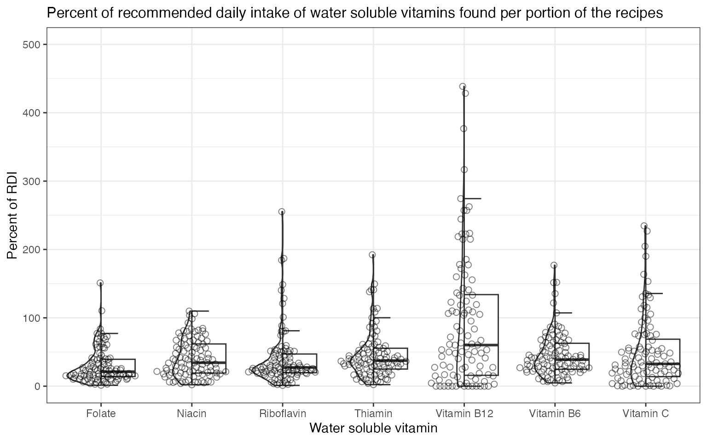
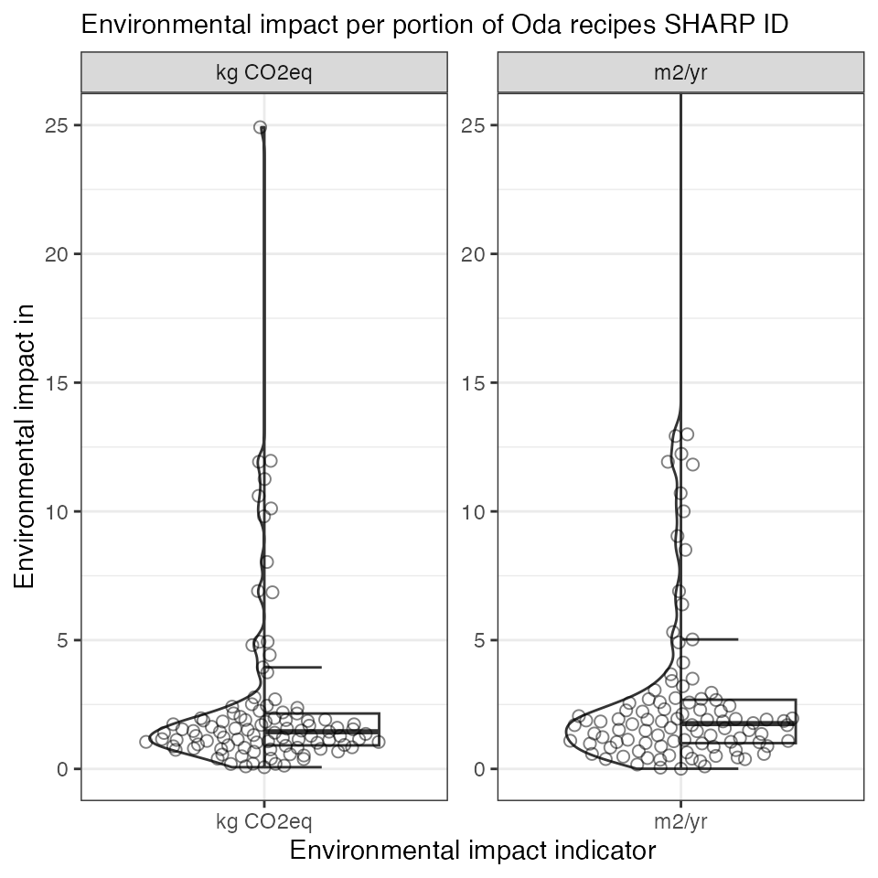

Exploring nutrients or environmental indicators
Exploration.RmdLoad libraries
library(sustainableNutRients)
library(tidyverse)
library(ggbeeswarm)
library(gghalves)
theme_set(theme_bw())Calculate nutritional content and environmental content per portion
The data used here are the recipes from Oda used in “Map foods to database”.
#Calculate nutrient content and environmental impact
calculations <- list()
calculations$nutrient_content <- recipes_oda$recipes %>%
standardiseFoodList() %>%
#Fix name of an ingredient
mutate(Ingredients = case_when(
Original_ingredients == "fish balls in curry sauce ready-made" ~ "fish balls in curry sauce",
TRUE ~ Ingredients)) %>%
#Map to volume_weight database
findFoodInDatabase(., "volume_weight", additional_entries = additional_entries$volume_weight) %>%
calculateWeightOfIngredients() %>%
#Map tp nutrient database,add number of portions and calculate nutrient content per portion
findFoodInDatabase(., "nutrients", additional_entries = additional_entries$nutrients) %>%
mutate(database_ID = case_when(
Ingredients == "fish balls in curry sauce" ~ fixFoodMappingError(additional_entries$nutrients$query_words, "fish ball", "curry sauce"),
Ingredients == "sausage stew" ~ fixFoodMappingError(additional_entries$nutrients$query_words, "sausage", "stew"),
Ingredients == "stew mix" ~ fixFoodMappingError(additional_entries$nutrients$query_words, "stew", "mix"),
TRUE ~ database_ID)) %>%
#Add number of portions
left_join(., recipes_oda$meta %>% select(recipe_name, number_of_portions) %>% unique()) %>%
calculateNutrientContentOfFoodlist(., calculate_nutrients = "per portion")
#> Joining, by = "Ingredients"
#> Joining, by = "database_ID"
#> Joining, by = "Ingredients"
#> Joining, by = "recipe_name"
#> Warning: Unknown or uninitialised column: `environmental_impact_indicator`.
calculations$environmental_impact <- recipes_oda$recipes %>%
standardiseFoodList() %>%
#Fix name of an ingredient
mutate(Ingredients = case_when(
Original_ingredients == "fish balls in curry sauce ready-made" ~ "fish balls in curry sauce",
TRUE ~ Ingredients)) %>%
#Map to volume_weight database
findFoodInDatabase(., "volume_weight", additional_entries = additional_entries$volume_weight) %>%
calculateWeightOfIngredients() %>%
#Map to SHARP ID, add number of portions and calculate environmental impact per portion
findFoodInDatabase(., "sustainability", additional_entries = additional_entries$environmental_impact) %>%
mutate(database_ID = case_when(
Ingredients == "fish balls in curry sauce" ~ fixFoodMappingError(additional_entries$environmental_impact$query_words, "fish ball", "curry sauce"),
Ingredients == "sausage stew" ~ fixFoodMappingError(additional_entries$environmental_impact$query_words, "sausage", "stew"),
Ingredients == "stew mix" ~ fixFoodMappingError(additional_entries$environmental_impact$query_words, "stew", "mix"),
str_detect(Ingredients, "mac and cheese") ~ fixFoodMappingError(additional_entries$environmental_impact$query_words, "mac and cheese", "bacon"),
Ingredients == "bean salad" ~ fixFoodMappingError(additional_entries$environmental_impact$query_words, "bean salad"),
Ingredients == "meatballs in tomato sauce" ~ fixFoodMappingError(additional_entries$environmental_impact$query_words, "meatball", "tomato sauce"),
TRUE ~ database_ID)) %>%
#Add number of portions
left_join(., recipes_oda$meta %>% select(recipe_name, number_of_portions) %>% unique()) %>%
calculateEnvironmentalImpactOfFoodlist(., calculate_sustainability = "per portion")
#> Joining, by = "Ingredients"
#> Joining, by = "database_ID"
#> Joining, by = "Ingredients"
#> Joining, by = "recipe_name"Plot data
Nutrient content
Looking at how much of the recommended intake of nutrient found per portion of the recipes.
# Recommended intake of nutrients for adult women in Norway
nutrient_units <- tibble(
'nutrient' = c('Vitamin A', 'Retinol', 'Beta-carotene',
'Vitamin D','Vitamin E', 'Thiamin',
'Riboflavin','Niacin', 'Vitamin B6',
'Folate', 'Vitamin B12', 'Vitamin C',
'Calcium', 'Iron', 'Sodium',
'Potassium', 'Magnesium', 'Zinc',
'Selenium', 'Copper', 'Phosphorus',
'Iodine'),
'rdi' = c(700, 700, 8400,
10, 8, 1.1,
1.3, 15, 1.2,
400, 2, 75,
800, 15, 2300,
3100, 280, 7,
50, 0.9, 600,
150))
#Plot function
buildPlot <- function(dataframe, title, x_axis, x_axis_title, y_axis, y_axis_title, ylim, title_text_size = 12) {
ggplot(dataframe, aes(x = .data[[x_axis]], y = .data[[y_axis]])) +
geom_half_boxplot(side = "r", outlier.shape = NA) +
geom_half_violin() +
geom_quasirandom(alpha = 0.5, size = 2, shape = 21) +
labs(
title = title,
x = x_axis_title,
y = y_axis_title
) +
coord_cartesian(ylim = ylim) +
theme(plot.title = element_text(size = title_text_size))
}
# Calculate pct of intake per portion
rdi_per_portion <- calculations$nutrient_content %>%
right_join(nutrient_units) %>%
mutate(pct_rdi_per_portion = (nutrient_content_per_portion/rdi)*100)
#> Joining, by = "nutrient"
#Minerals
buildPlot(dataframe = rdi_per_portion %>% filter(nutrient %in% c(
'Calcium', 'Iron', 'Sodium',
'Potassium', 'Magnesium', 'Zinc',
'Selenium', 'Copper', 'Phosphorus',
'Iodine')),
title = "Percent of recommended daily intake of minerals found per portion of the recipes", x_axis = "nutrient", x_axis_title = "Mineral", y_axis = "pct_rdi_per_portion", y_axis_title = "Percent of RDI", ylim = c(0, 600)) #Cut out a few outliers to make plot more readable
# Water soluble vitamins
buildPlot(dataframe = rdi_per_portion %>% filter(nutrient %in% c(
'Thiamin', 'Riboflavin','Niacin', 'Vitamin B6',
'Folate', 'Vitamin B12', 'Vitamin C')),
title = "Percent of recommended daily intake of water soluble vitamins found per portion of the recipes", x_axis = "nutrient", x_axis_title = "Water soluble vitamin", y_axis = "pct_rdi_per_portion", y_axis_title = "Percent of RDI", ylim = c(0, 500))
# Fat soluble vitamins
buildPlot(dataframe = rdi_per_portion %>% filter(nutrient %in% c(
'Vitamin A', 'Retinol', 'Beta-carotene', 'Vitamin D','Vitamin E')),
title = "Percent of recommended daily intake of fat soluble vitamins found per portion of the recipes", x_axis = "nutrient", x_axis_title = "Fat soluble vitamin", y_axis = "pct_rdi_per_portion", y_axis_title = "Percent of RDI", ylim = c(0, 750))Environmental impact of the recipes
After calculating the environmental impact of the recipes, it is nice to have a look at it. Using ggplot to visualise the environmental impact of the recipes
#Environmental impact per 100g vs per portion
buildPlot(dataframe = calculations$environmental_impact,
title = "Environmental impact per portion of Oda recipes SHARP ID", x_axis = "environmental_impact_indicator", x_axis_title = "Environmental impact indicator", y_axis = "environmental_impact_per_portion", y_axis_title = "Environmental impact in", ylim = c(0, 7), title_text_size = 11) +
facet_wrap(~environmental_impact_indicator, scales = "free") 
# Recipes with only one portion have a larger environmental impact than recipes with more than 1 portion, look only at those.
# Environmental impact per 100g vs per portion removing those with a portion size of 1
buildPlot(dataframe = calculations$environmental_impact %>% filter(number_of_portions != 1),
title = "Environmental impact per portion of Oda recipes \nwith number of portions >1 mapped to SHARP ID", x_axis = "environmental_impact_indicator", x_axis_title = "Environmental impact indicator", y_axis = "environmental_impact_per_portion", y_axis_title = "Environmental impact in", ylim = c(0, 7), title_text_size = 11) +
facet_wrap(~environmental_impact_indicator, scales = "free")